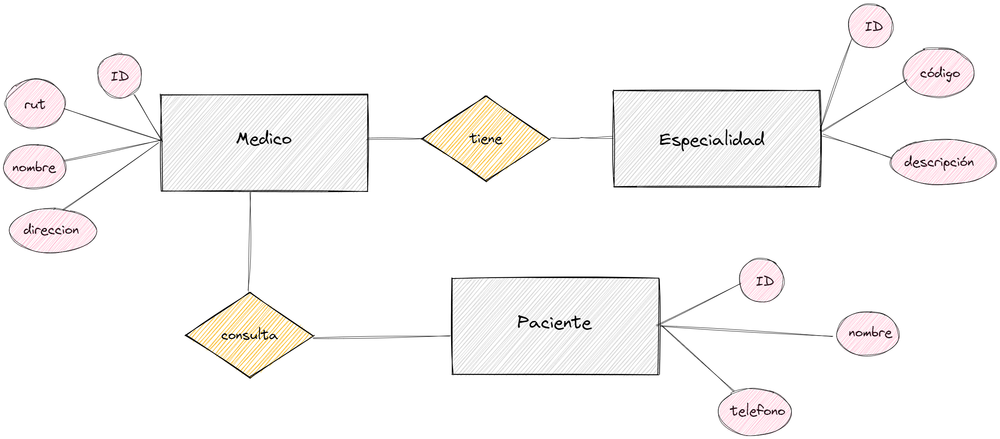

Modelo Conceptual

Modelo conceptual de entidades: Médicos y Pacientes
Modelo Lógico
Modelo lógico de entidades, se añade una entidad intermedia <<Consulta>> para conectar con Pacientes y Médicos
Modelo Físico
Modelo físico: Médicos y Pacientes
Script Schema
Script del esquema Peliculas y actores para Postgres